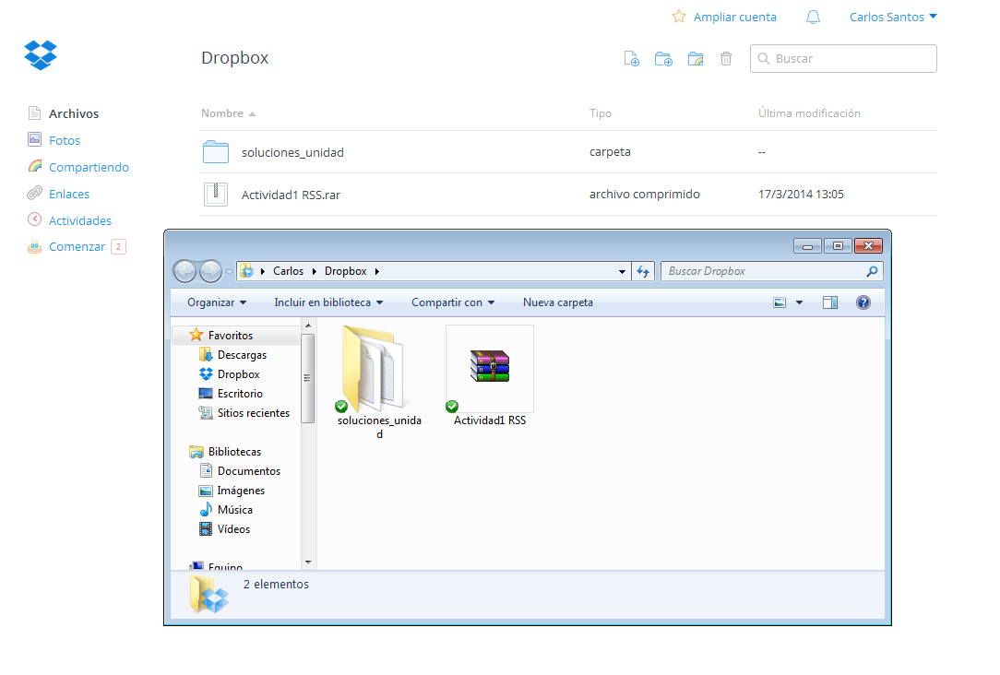
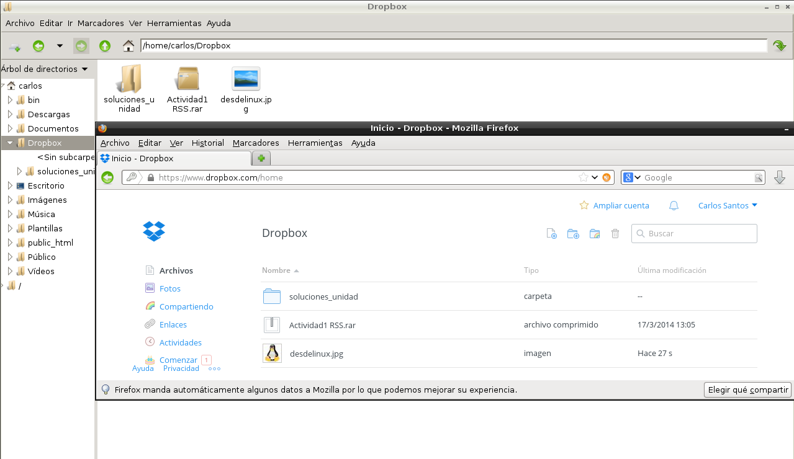

- Módulo: FUW
- Título del trabajo Almacenamiento en la nube
- Componentes del grupo: Carlos Santos
- Curso Académico: 2013/2014
- Fecha de entrega: 24 de Abril de 2014
Mediante este sistema operativo,la descarga e instalacion se realiza de una forma muy facil. Previamente nos hemos tenido que registrar en la pagina oficial de dropbox. Una vez instalado el dropbox,nos saldra en el sistema una carpeta llamada 'Dropbox' donde simplemente tenemos que arrastrar los ficheros que queramos y esperar a que se actualice. Una vez hecho esto,dentro de nuestra cuenta de dropbox.com nos saldran los archivos arrastrados anteriormente ya sincronizados y listos para descargar,etc.
Desde un sistema GNU Linux,la instalacion de dropbox es un poco mas dificil ya que ha de realizarse a traves de los repositorios Una vez hecho esto,nos aparecera una carpeta llamada 'Dropbox' y la funcion para subir archivos a la nube es igual que en Windows.
En mi caso desde Linux se ven los archivos que subi desde windows y viceversa.
